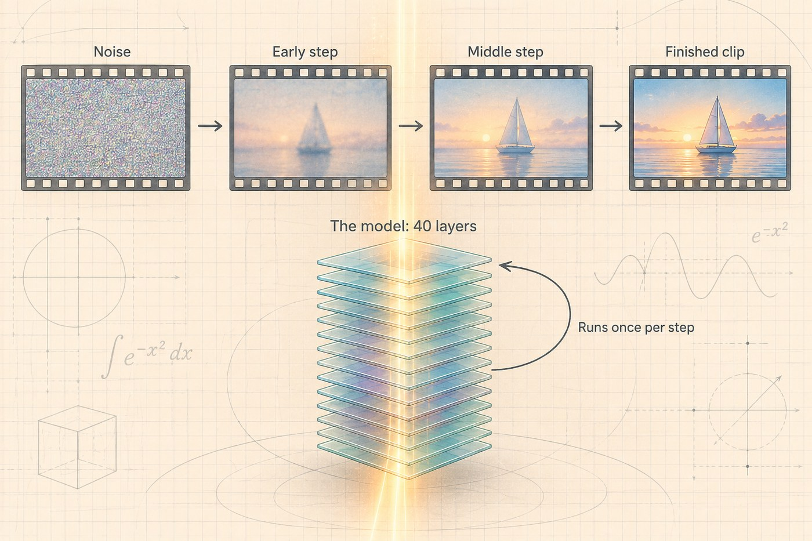
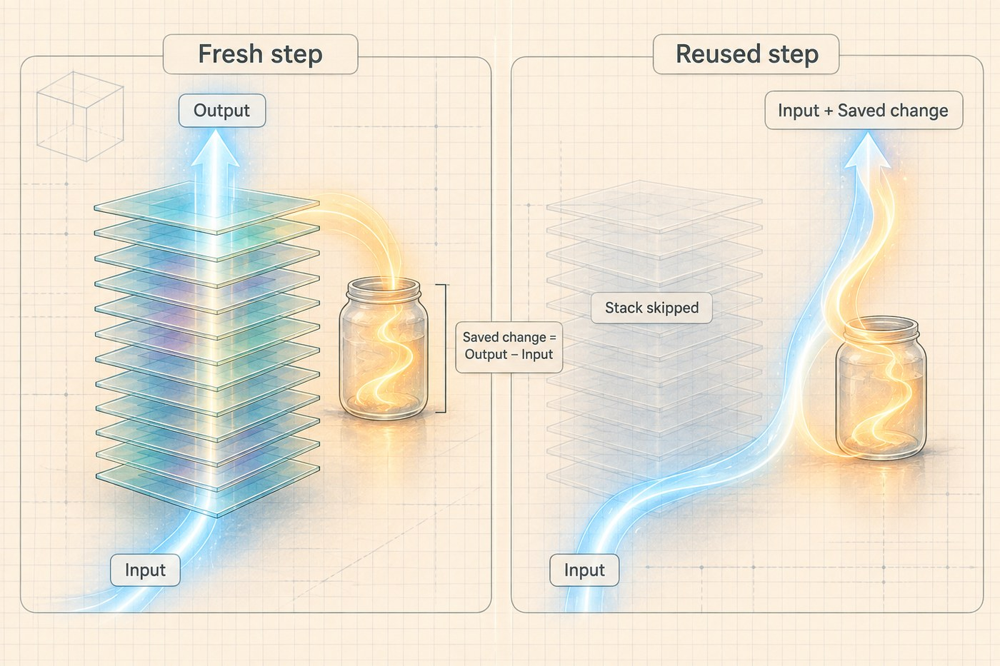
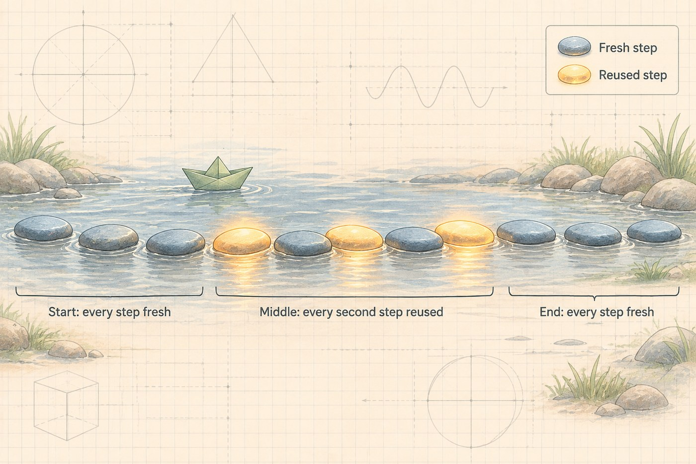
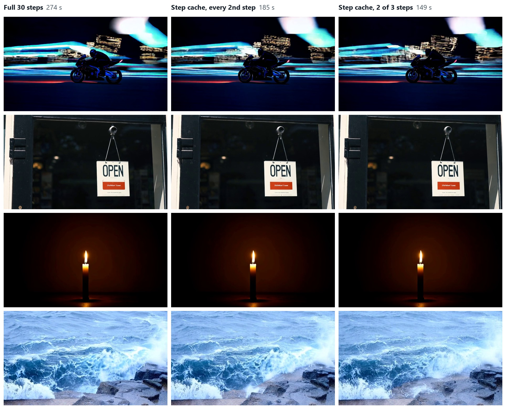
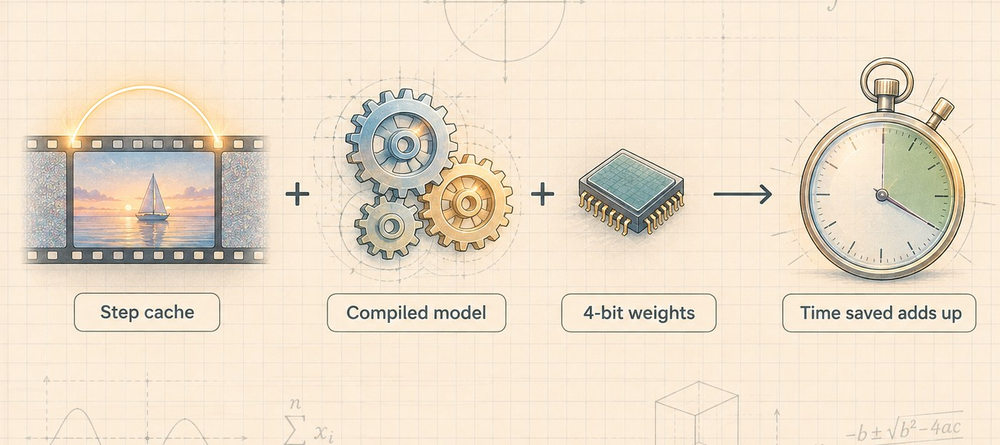

Skip a Step, Keep the Clip
A fixed-schedule step cache for open video models: one stored change, no tuning, a third to nearly half of the generation time saved on Wan 2.1 14B
Abstract
A video diffusion model makes a clip by running the same large stack of layers many times, once or twice for every denoising step. Most of that work is repeated: from one step to the next, the change the stack makes to its input moves only a little. This paper describes a very small method that uses that fact. On a fixed schedule, known before generation starts, the model skips its whole layer stack and adds back the one change it stored the last time the stack ran. Nothing is trained, nothing is measured at run time, and nothing is fitted to the model.
On Wan 2.1 T2V-14B (480×832, 49 frames, 30 steps) the method saved 32.9% of the generation time when it reused every second step in the middle of the run, and 46.0% when it reused two of every three, with 0.6 GB of extra memory. The result stays the same clip: the cached video sits at a perceptual distance (LPIPS) of 0.09 to 0.10 from the full 30-step video, where simply taking fewer steps for the same saving lands at 0.35 to 0.42. Automatic quality scores on 24 prompts stayed at the full-quality level. The saving also stacks: it stayed whole on top of a compiled model and on top of 4-bit weights.
The tests so far cover one model family and a modest number of clips. The method and code are published openly so that others can test them on more models, and the paper ends with the tests that are still to be done.
Keywords: video diffusion, diffusion transformers, inference acceleration, feature caching, residual caching, Wan 2.1, training-free acceleration, open-source video generation
- 1. Introduction
- 2. The idea
- 3. The method
- 4. How it was tested
- 5. Time, memory and energy
- 6. It keeps the same clip
- 7. Quality
- 8. It stacks with other speed-ups
- 9. Related work
- 10. What is still to be tested
- 11. Conclusion
- References
1. Introduction
Open-source video models have become very good and very slow. Wan 2.1 T2V-14B, the model used in this paper, needs about four and a half minutes on an 80 GB data-centre card to make one three-second clip at 480p [1]. Almost all of that time is spent in one place: a stack of 40 transformer layers that is run twice at each of 30 denoising steps, 60 passes in total.
A family of training-free methods speeds this up by caching: when the model's work at one step looks much like its work at the last, reuse it [2–9]. Most of these methods decide when to reuse by watching a signal while the model runs, and they need a threshold, or a set of fitted coefficients, for each model.
This paper asks how far the plainest possible version goes. There is no signal and no threshold. The schedule is fixed in advance, and the thing stored is a single tensor. The contribution is not a new mechanism; the pieces are known. It is a clean, open measurement of how much this plain version delivers on a large current video model, what it costs in memory, whether the result is still the same clip, and whether the saving survives next to other speed-ups.

2. The idea
Think of the layer stack as a function that takes the current noisy video x and returns a refined version. What matters is the change it makes:
In the middle of a run, the change at one step is very close to the change at the step before. So on some steps the stack does not need to run at all. The model takes its new input and adds the change it stored last time:
The input x is always the fresh one for this step. Only the change is borrowed. This is why the result stays on the same path as the full run, instead of drifting to a different video.

3. The method
3.1 A fixed schedule
The first steps of a run set the layout of the scene, and the last steps set the fine detail. Both change quickly, so both always run in full. Reuse happens only in the middle. For a 30-step run:
| Part of the run | Every 2nd step | 2 of every 3 steps |
|---|---|---|
| Steps 1 to 5 | all fresh | all fresh |
| Steps 6 to 26 | fresh, reused, fresh, reused … | fresh, reused, reused, fresh … |
| Steps 27 to 30 | all fresh | all fresh |
| Stack runs skipped | 10 of 30 | 14 of 30 |
The schedule depends only on the step number. It is the same for every prompt, and it is known before the run starts, which makes the cost of a clip predictable to the second.

3.2 One stored change, not forty
The first version of this method stored one change for each of the 40 layers. That works, but on a 14-billion-parameter model it costs 15.5 GB of extra memory. Storing a single change for the whole stack, the last layer's output minus the first layer's input, gives the same result for 0.6 GB (Section 5). One tensor is kept for the pass with the prompt and one for the pass without it, because the two see different inputs.
3.3 The code
The whole method is about forty lines, published with this paper as step_cache.py. It wraps the layers of a Diffusers transformer and needs no change to the model or the sampler:
cache = StepCache(pipe.transformer, every=2) # or every=3 cache.reset() # once before each clip video = pipe(prompt, num_inference_steps=30).frames[0]
4. How it was tested
All tests used Wan 2.1 T2V-14B through Diffusers, at 480×832, 49 frames, 30 steps, guidance 5.0, in bfloat16, on single rented NVIDIA A100 80 GB cards. Every comparison used the same prompt and the same starting noise for each method, so the only thing that differs is the method. Prompts were split between calm scenes (a candle, a shop sign, a person reading) and busy ones (a motorcycle at night, a crowd, crashing waves).
Three things were measured: wall-clock seconds and energy per clip; how far the result is from the full 30-step clip, using LPIPS [10] and PSNR; and quality with no reference at all, using five automatic scores (Section 7). The baseline for a fair comparison is not only the full run. It is also the obvious alternative: simply taking fewer steps for the same saving.
5. Time, memory and energy
| Method | Seconds per clip | Time saved | Energy saved | Peak memory |
|---|---|---|---|---|
| Full 30 steps | 274 | – | – | 35.3 GB |
| Step cache, every 2nd step | 184 | 32.9% | 32.7% | 35.9 GB |
| Step cache, 2 of 3 steps | 148 | 46.0% | 46.1% | 35.9 GB |
The saving follows the schedule almost exactly: skipping 10 of 30 stack runs saves a third of the time, and skipping 14 of 30 saves nearly half. Energy drops by the same share. The memory cost is 0.6 GB, so the cache fits anywhere the plain model fits. The per-layer version reached the same saving but peaked at 50.8 GB.
6. It keeps the same clip
There are two ways to save a third of the time. One is this cache. The other is to run 20 steps instead of 30. Both produce a good-looking video, but only one produces the same video.
| Method | Time saved | LPIPS to the full clip |
|---|---|---|
| Step cache, every 2nd step | 32.9% | 0.094 |
| Plain 20 steps | 32.9% | 0.351 |
| Step cache, 2 of 3 steps | 46.0% | 0.104 |
| Plain 16 steps | 46.1% | 0.424 |
In a direct eight-clip comparison the cached clip was closer to the full clip than the 20-step clip on eight of eight. This matters in practice. A creator can find a seed they like with the fast setting and trust that the full-quality render will be that clip, not a different one. Figure 4 shows what it looks like.

7. Quality
Staying close to the full clip is one question. Whether the clip is good is another. On 24 prompts, each clip was scored with five automatic measures that need no reference: how well it matches its prompt and how alike its frames are (both CLIP [11]), an aesthetic score, the MUSIQ picture-quality score [12], and how steady the motion is (optical-flow warp error with RAFT [13]).
| Method | Time saved | Prompt match | Frame likeness | Aesthetic | MUSIQ | Warp error |
|---|---|---|---|---|---|---|
| Full 30 steps | – | 0.2740 | 0.9748 | 6.00 | 58.6 | 0.0265 |
| Step cache, every 2nd step | 32.6% | 0.2748 | 0.9768 | 6.00 | 58.3 | 0.0261 |
| Plain 20 steps | 32.9% | 0.2680 | 0.9741 | 6.02 | 56.8 | 0.0292 |
| Step cache, 2 of 3 steps | 45.7% | 0.2738 | 0.9735 | 5.98 | 57.7 | 0.0262 |
| Plain 16 steps | 46.1% | 0.2729 | 0.9734 | 5.80 | 53.1 | 0.0352 |
With a third of the time saved, the cached clips score the same as the full run on every measure. Against plain 20 steps at the same cost, the cache scored higher on prompt match in 17 of 24 clips and on motion steadiness in 16 of 24. With nearly half the time saved the gap is wider: the cache holds a MUSIQ score of 57.7 and a warp error of 0.026, where plain 16 steps falls to 53.1 and 0.035, and the cache scored higher on both in 16 of 24 clips.
The author also compared the clips by eye, two at a time. With a third saved, the cached clip looked better than plain 20 steps in 10 pairs and worse in 2, with 12 the same. With about half saved, it looked better than plain 16 steps in 15 pairs and worse in 3, with 6 the same. Set beside the full 30-step clip, the half-time cached clip looked the same in 22 of 24 pairs. This was one viewer who could see which clip was which, so it is an early reading; a blind test with more viewers is planned (Section 10).
8. It stacks with other speed-ups
A speed-up is most useful if it adds to the others people already use. The cache was run on top of three of them (eight clips each).
| Already in use | Cache saves on top | Note |
|---|---|---|
| Compiled model (torch.compile) | 32.4% | Together 44.5% faster than the plain model; 55.3% with 2 of 3 steps |
| 4-bit weights | 32.6% | LPIPS 0.072 to the 4-bit model's own full clip |
| A shorter 20-step run | 34.0% | Together 55.8% less time than the 30-step run |
In each case the cache kept its full saving. Compilation makes each layer faster, 4-bit weights make the model smaller, and the cache removes whole runs of the stack. They work on different parts of the cost, so they add up.

9. Related work
Caching for diffusion models is an active field, and this method stands on it. FORA [2] reuses attention and MLP outputs across steps on a static schedule in image models, and Δ-DiT [3] caches different blocks at different stages. TeaCache [4] skips the block stack and adds a cached residual, the same store used here, and decides when to do so from a fitted function of the timestep embedding. First Block Cache, Pyramid Attention Broadcast, FasterCache, MagCache and TaylorSeer are available in Diffusers [5], and EasyCache [6] and SeaCache [7] are recent adaptive methods. DeepCache [8] introduced the idea for U-Net models.
What this paper adds is the measurement of the simplest member of the family, a fixed schedule with a single whole-stack residual and a protected start and end, on a large current video model, with its memory cost, its fidelity to the full clip against the fewer-steps alternative, and its behaviour next to compilation and quantization. In our own test on Wan 2.1 14B the fixed schedule performed on par with a TeaCache whose threshold we re-fitted for that model, without needing the fitting step. A fixed schedule has practical appeal: no coefficients to calibrate for a new model, and a clip cost known in advance.
10. What is still to be tested
These results are a first set, and the method is published so others can extend them. The open tests, in the order we plan to run them:
- More models. The full set of results is for Wan 2.1 14B. HunyuanVideo, LTX and Wan 2.2 are next. Wan 2.2 switches between two expert models during a run, and the cache should refresh at the switch. In earlier small trials on two smaller models, caches designed for those models did as well or better, so how the benefit depends on model size is an open question.
- More clips and blind viewers. The quality edge at nearly half the time saved rests on 24 prompts and one viewer. A larger prompt set with several blind viewers will settle it.
- Head-to-head with the newest adaptive caches. SeaCache, EasyCache and TaylorSeer have not yet been run beside this method on the same clips.
- Other settings. Longer clips, higher resolution, image-to-video, and other samplers and step counts.
Anyone can run these. The code is one small file, and results of any kind, for or against, are welcome at the address above.
11. Conclusion
A large video model repeats most of its work from one step to the next. Skipping the layer stack on a fixed schedule and adding back one stored change is enough to recover a third to nearly half of the generation time on Wan 2.1 14B, for 0.6 GB of memory and about forty lines of code. The result is the same clip as the full run, its measured quality holds, and the saving adds to compilation and 4-bit weights. The method is open. We hope others will test it on the models they use.
The code is published with this paper as step_cache.py, and the measured numbers behind every table as results.json.
References
- Wan Team, "Wan: Open and Advanced Large-Scale Video Generative Models," arXiv:2503.20314, 2025. arxiv.org/abs/2503.20314
- P. Selvaraju, T. Ding, T. Chen, I. Zharkov and L. Liang, "FORA: Fast-Forward Caching in Diffusion Transformer Acceleration," arXiv:2407.01425, 2024. arxiv.org/abs/2407.01425
- P. Chen et al., "Δ-DiT: A Training-Free Acceleration Method Tailored for Diffusion Transformers," arXiv:2406.01125, 2024. arxiv.org/abs/2406.01125
- F. Liu et al., "Timestep Embedding Tells: It's Time to Cache for Video Diffusion Model" (TeaCache), arXiv:2411.19108, 2024. github.com/ali-vilab/TeaCache
- Hugging Face Diffusers documentation, "Caching" (First Block Cache, Pyramid Attention Broadcast, FasterCache, MagCache, TaylorSeer). huggingface.co/docs/diffusers/main/en/optimization/cache
- "EasyCache," arXiv:2507.02860, 2025. arxiv.org/abs/2507.02860
- "SeaCache," arXiv:2602.18993, 2026. arxiv.org/abs/2602.18993
- X. Ma, G. Fang and X. Wang, "DeepCache: Accelerating Diffusion Models for Free," arXiv:2312.00858, 2023. arxiv.org/abs/2312.00858
- X. Zhao, X. Jin, K. Wang and Y. You, "Real-Time Video Generation with Pyramid Attention Broadcast," 2024. See [5].
- R. Zhang, P. Isola, A. A. Efros, E. Shechtman and O. Wang, "The Unreasonable Effectiveness of Deep Features as a Perceptual Metric" (LPIPS), CVPR 2018. arxiv.org/abs/1801.03924
- A. Radford et al., "Learning Transferable Visual Models From Natural Language Supervision" (CLIP), ICML 2021. arxiv.org/abs/2103.00020
- J. Ke, Q. Wang, Y. Wang, P. Milanfar and F. Yang, "MUSIQ: Multi-scale Image Quality Transformer," ICCV 2021. arxiv.org/abs/2108.05997
- Z. Teed and J. Deng, "RAFT: Recurrent All-Pairs Field Transforms for Optical Flow," ECCV 2020. arxiv.org/abs/2003.12039
How to cite
B. Goldstein, "Skip a Step, Keep the Clip: A Fixed-Schedule Step Cache for Open Video Models," Benny Labs Foundation working paper, November 2026.